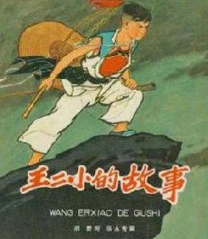

王二小

-->
王二小的家乡是八路军抗日根据地，经常受到日本鬼子的“扫荡”，王二小是儿童团员，他常常一边在山坡上放牛，一边给八路军放哨。1942年10月25日，日本鬼子又来“扫荡”，走到山口时迷了路。敌人看见王二小在山坡上放牛，就叫他带路。王二小装着听话的样貌走在前面，为了保卫转移躲藏的乡亲，把敌人带进了八路军的埋伏圈。突然，四面八方响起了枪声，敌人明白上了当就气急败坏地用刺刀挑死了王二小。机智勇敢的小英雄王二小，就这样被日本侵略者残酷地杀害了，牺牲在涞源县狼牙口村，年仅13岁。正在这时候，八路军从山上冲下来，消灭了全部敌人。